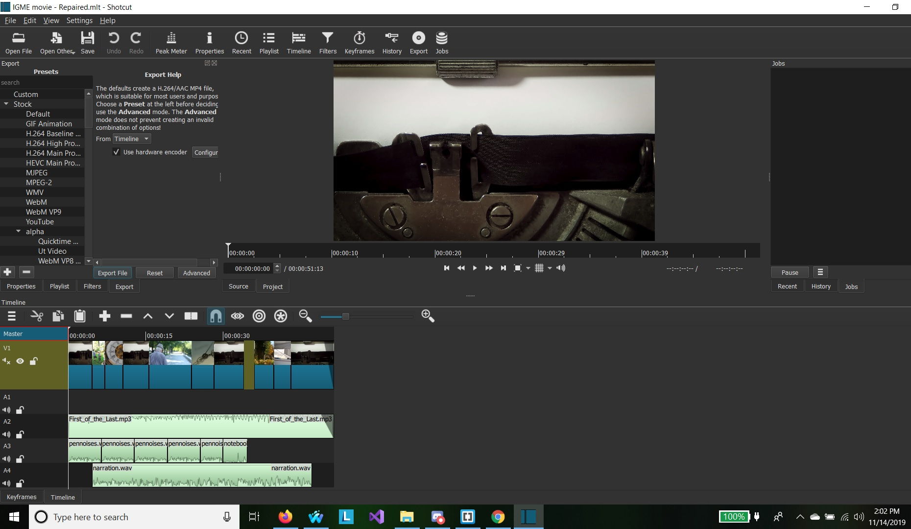

This is a commercial about being being kinder. It starts off about regret, and some fun old people jokes, but it segways into becoming a better person overall, so that you will not have those regrets in the future.
By: Silent Partner
By: Bailey Chapman